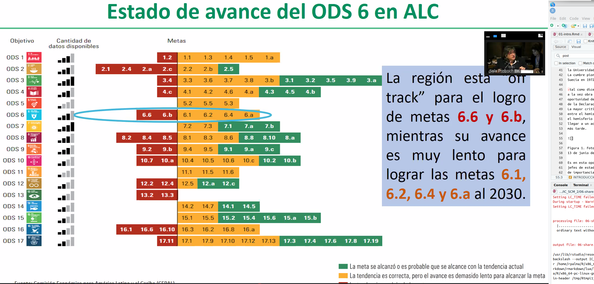

Capítulo 8 ¿Se ha postergado la agenda de los ODS 2030 por el COVID en LAC?
Conferencia AAREI 2023
Autores:
Galarraga María Cecilia 44, Pedrosa Julieta 45, Ruoti Rosario 46
8.1 Objetotivo
Realizar una investigación de campo para la cátedra Técnicas y Herramientas modernas II sobre acciones relacionadas a los Escenarios energéticos y ambientales post Covid 19
8.3 Marco Teórico
Para el desarrollo del trabajo de este libro, realizamos una búsqueda exhaustiva de información sobre los Objetivos de Desarrollo Sostenible (ODS) con énfasis en LAC (Latinoamérica y Caribe), partiendo de conceptos generales y fuimos ahondando en temas regionales y locales particulares ya vinculados en la situación post-pandemia y como se fue afrontando.
El COVID-19 supuso un impacto sanitario, económico y social de tal magnitud que obligó a recalibrar cualquier plan establecido. Paradójicamente, los objetivos y metas que contempla la Agenda 2030 están íntimamente ligados a la prevención y control de una crisis como la del coronavirus. Los ODS son la respuesta a muchos de nuestros problemas actuales y una herramienta útil para prevenir los futuros. Objetivos de Desarrollo Sostenible Para comenzar, los Objetivos de Desarrollo Sostenible (ODS) adoptados por Las Naciones Unidas en el año 2015 plasmaron la agenda global más ambiciosa, aprobada por la comunidad internacional, para impulsar la acción colectiva en torno a objetivos comunes globales. La idea principal es integrar y equilibrar tanto lo económico, lo social y lo ambiental, priorizando la lucha contra la pobreza y el hambre, haciendo hincapié en la defensa de los derechos humanos, la igualdad de género, junto a la eliminación de conductas de consumo insostenibles. Sin embargo, dicha agenda tiene ciertas complicaciones técnicas y críticas dado que presenta cierta dificultad y limitaciones para el cumplimiento de los 169 objetivos planteados para cumplir en el año 2030. La nueva trayectoria para el desarrollo internacional, aprobada en la 70º Asamblea General de las Naciones Unidas en septiembre de 2015, con la firma de 193 jefes de Estado y de Gobierno mundiales, busca el cumplimiento de los objetivos
planteados en el 2000 con el nombre de ODM (Objetivos de desarrollo del Milenio), dado que los mismos hasta el año 2015 no fueron alcanzados. De esta manera, la Agenda 2030 de los Objetivos de Desarrollo Sostenible es la sucesora de los compromisos y acuerdos dictados anteriormente. Lamentablemente se ha procedido a incorporarlos sin un estudio previo y verificación de la posibilidad de cumplimiento político y técnico de estos acuerdos, por lo que no se cuenta con las suficientes evidencias científicas que permitan reorientar adecuadamente las políticas mundiales de desarrollo.
Los 17 objetivos generales planteados eran:
- Objetivo 1: Poner fin a la pobreza.
- Objetivo 2: Hambre y seguridad alimentaria.
- Objetivo 3: Salud y Bienestar.
- Objetivo 4: Educación de calidad.
- Objetivo 5: Igualdad de género.
- Objetivo 6: Agua limpia y saneamiento.
- Objetivo 7: Energía asequible y no contaminante.
- Objetivo 8: Trabajo decente y crecimiento económico.
- Objetivo 9: Industria, innovación e Infraestructura.
- Objetivo 10: Reducción de las desigualdades.
- Objetivo 11: Ciudades y comunidades sostenibles.
- Objetivo 12: Producción y consumo responsable.
- Objetivo 13: Acción por el clima.
- Objetivo 14: Océanos.
- Objetivo 15: Bosques, desertificación y diversidad biológica.
- Objetivo 16: Paz, justicia e instituciones sólidas.
- Objetivo 17: Alianzas para lograr los objetivos.
8.4 El Objetivo 12 Producción y Consumo Responsable.
Como mencionamos anteriormente, nos enfocaremos en el Objetivo 12 Producción y Consumo Responsable. Como su nombre lo indica, tiene que ver con considerar las consecuencias de producir: fabricar o elaborar un producto mediante el trabajo, y de consumir: usar, disfrutar o servirse de cierta cosa. Las metas de este objetivo parten del hecho de reducir el desperdicio mundial de alimentos, hasta llegar a alcanzar un turismo sostenible, incluyen el tratamiento de residuos hasta la incorporación de subsidios a ciertas tecnologías, sin embargo se
podría señalar que el ODS 12 se centra en concientizar y modificar el crecimiento económico del uso de los recursos, de una manera que se minimice su impacto en las vidas humanas y el medio ambiente. El logro de avances en este importante objetivo, requiere de la participación de todas las partes involucradas: los consumidores, las empresas y las políticas públicas. Su importancia se debe a que una de las principales razones del deterioro ambiental es consecuencia del modelo actual de producción y consumo. El capitalismo de consumo, además de ciertas circunstancias macroeconómicas y macrosociales vinculadas a la compra, han favorecido a que estas formas comerciales se ajusten rápidamente en los estilos de vida de las distintas poblaciones. A la problemática del constante crecimiento poblacional, con hábitos de consumo poco sostenibles, se debe sumar los efectos de las estrategias de producción, las tecnologías utilizadas, la confinación de los desechos, la elección de proveedores, el diseño del producto, las campañas de marketing, etc. que inciden fuertemente en los hábitos de consumo de los habitantes, en la degradación de los recursos y en la sostenibilidad del planeta. Un claro ejemplo, es la forma de producción de Mac como muchas otras empresas tecnológicas, en la que trabajan con obsolescencia de producto programada, es decir, los productos se volverán obsoletos en el corto plazo por una falla programada o bien una deficiencia incorporada por ellos mismos.
¿Qué se espera en el futuro? Un modelo de pronóstico llamado Spaceship Earth desarrollado por la organización DNV GL, evaluó la probabilidad de que se alcancen los ODS para 2030. Según el informe, ninguno de los 17 ODS se alcanzará en todas las regiones. Específicamente se espera que el ODS 12, no sea alcanzado por los países de la Organización para la Cooperación y el Desarrollo Económicos (OCDE), China y los que conforman el BRISE (Brasil, Rusia, India, Sudáfrica y otras economías emergentes). Además, es probable que la brecha entre el estado actual y el objetivo se cierre menos del 50%; por otro lado, se prevé un cumplimiento superior al 95% en la región denominada por la ONU como el “resto del mundo”. La situación Argentina A nivel nacional se encuentra el Consejo Nacional de Políticas Sociales, creado en 2002 como un espacio de articulación para la planificación, coordinación y seguimiento de las políticas sociales nacionales. En el mismo, se puede consultar la vinculación de los ODS con objetivos y prioridades del Gobierno, algunos documentos sobre ODS y las acciones realizadas a la fecha.
El Departamento de Asuntos Económicos y Sociales de las Naciones Unidas (DESA) ha realizado algunas convocatorias abiertas de Buenas Prácticas de los ODS, correspondientes a ciertos periodos. La del año 2021, contó con historias de éxito y lecciones aprendidas de los ODS en la implementación de la Agenda 2030. El propósito de esta nueva convocatoria fue destacar ejemplos de buenas prácticas, incluidas aquellas que se reorientaron y priorizaron dada la situación post-pandemia. Más de 400 experiencias fueron aprobadas por expertos de las Naciones Unidas. El Ministerio de Ambiente y Desarrollo Sostenible de la Argentina (MAyDS), presentó un plan de Sostenibilidad en la Administración Pública con fecha de práctica desde febrero de 2020 a diciembre del mismo año. Sus objetivos apuntaron a las sociedades y comunidades sostenibles como así también hacia el consumo y la producción sostenible, haciendo referencia a las temáticas abarcadas en los ODS 11,12 y 17. Esta herramienta sirve para medir las medidas sostenibles en los organismos de la administración, y a través de ella generar información trazable respecto de los principales indicadores de consumo vinculados a la accesibilidad y movilidad de cada organismo. En función de ello, proponer metas de optimización y mejora continua medibles en el tiempo, permitiendo corroborar los logros alcanzados. De esta manera, además de los beneficios ambientales y sociales se busca relacionarlos con mejoras económicas al reducir los usos ineficientes de recursos y energía, resultando un ganar-ganar. La aplicación fue a través de cuestionarios, entrevistas y relevamiento de información y se inició identificando los principales ejes temáticos: gestión de los recursos (energía, agua, gas, residuos); racionalización del uso del papel e implementación del proceso electrónico; compras públicas sustentables; accesibilidad; movilidad y teletrabajo; superficies y espacios verdes; capacitación y difusión, etc. De cada eje temático se identificaron aspectos a evaluar combinados con un listado de aproximadamente cien (100) preguntas. La valorización final de los ejes temáticos, responde al promedio obtenido del total de preguntas realizadas. Por último, el ISSOs es el valor promedio de los ejes temáticos seleccionados. Los resultados obtenidos indican que el ISSOs en el MAyDS en los 11 ejes evaluados equivale a 3,19 puntos, lo que define una línea de base de sostenibilidad en desarrollo, detectando que el MAyDS se encuentra a casi 2 puntos de pasar a una etapa consolidada. Solo dos ejes temáticos se encuentran en etapa de crecimiento e integración: Racionalización en el uso de papel /implementación de expediente electrónico que alcanzó un valor de 4,58 y Compras Públicas sostenibles (4,04). Con los resultados mencionados se espera que se adopten mejoras que, a partir de la aplicación de un enfoque sistémico se podrá realizar la correcta evaluación continua y permanente aportando al crecimiento y desarrollo de los ODS, recordando que el abordaje de los 3 ejes principales no debe hacer por separado
sino que se encuentran integrados y vinculados entre sí, siendo de igual importancia.
Alineación de las metas de los ODS en el contexto de la pandemia de COVID-19 A mediados del tiempo previsto para la promulgación de la Agenda 2030 para el Desarrollo Sostenible, nos encontramos en un mundo muy diferente al que se presentó cuando se lanzó la Agenda. La pandemia de Covid-19, al tiempo que amenaza la salud y las economías y profundiza las desigualdades existentes, está desencadenando fuerzas de cambio. En junio de 2020, el Consejo Nacional de Coordinación de Políticas Sociales (CNCPS) convocó a la Comisión Nacional Interinstitucional de Implementación y Seguimiento de los ODS para desarrollar el nuevo marco de metas de ODS alineadas y priorizadas de acuerdo con las políticas y circunstancias nacionales. Con las nuevas vulnerabilidades sociales y económicas la alineación y priorización de las metas se enmarca en políticas centradas en las personas, con foco en llegar primero a los más rezagados considerando al Estado como principal impulsor del cambio social. Una vez priorizadas las metas, se analizaron los indicadores correspondientes para monitorear los avances. Estas revisiones estaban orientadas a reforzar la indivisibilidad de los ODS, la transversalidad de las metas, la coherencia de las políticas y fortalecer el marco de seguimiento. Inicialmente, el proceso involucró la revisión de metas oficiales vigentes hasta diciembre de 2019. Para ello, el CNCPS asignó metas de los ODS de acuerdo a las
competencias de los ministerios, solicitó la confirmación de las mismas y la definición de su continuidad. Una vez que se definió dicha continuidad, se revisaron los indicadores de seguimiento con los avances esperados para 2021. Posteriormente, se asignaron las metas de los ODS que no estaban incluidas anteriormente. Para esas nuevas metas priorizadas, se presentaron como referencia los indicadores del marco de monitoreo global. Así, al final de cada etapa la máxima autoridad de cada organismo envía a la Presidencia del CNCPS las metas priorizadas y sus indicadores, como expresión del compromiso político con la Agenda 2030. Los principales resultados alcanzados fueron: • Metas globales vinculadas a prioridades nacionales. • Metas de los ODS incluidas en el marco de seguimiento respaldadas por los ministros. • Un marco de seguimiento más sólido, integrado y coherente. • “No dejar a nadie atrás” como horizonte en la alineación y medición de los ODS. • Alineación entre los ODS, metas, indicadores, intervenciones y recursos presupuestarios movilizados. • Consolidación de la Comisión Nacional Interinstitucional como un foro de discusión e intercambio en relación a la implementación y seguimiento de la Agenda 2030 en el nivel nacional. • Posicionamiento del CNCPS como organismo conductor de la implementación y seguimiento de la Agenda 2030. • Acciones relacionadas con la alineación nacional y la priorización difundidas a través del sitio web del CNCPS. Impacto y acciones frente a la pandemia de COVID-19 para reconstruir mejor El COVID-19 Las restricciones se vincularon principalmente al evento COVID-19 que implicó demora en su implementación debido al Aislamiento Social, que luego fue superado gracias a la posibilidad de las telecomunicaciones. Como esta práctica se basa en mejoras en los ambientes de trabajo, debería ser considerada como herramienta para reconstruir los impactos del COVID19. En este sentido, por ejemplo, algunos de los ejes seleccionados para ser evaluados tienen que ver con la existencia de superficies verdes en los edificios, la implementación del teletrabajo, y la seguridad e higiene. Se espera que la alineación de los ODS en las estrategias nacionales influya resaltando acciones para acompañar las medidas políticas implementadas para acelerar la producción, mejorar los ingresos y el bienestar social en la recuperación post COVID 19. Además, que proporcione una orientación para reconstruir de manera más inclusiva, llegando primero a los más rezagados y luego a todos. Asimismo, que brinde un marco y una agenda coherentes para construir alianzas.
8.5 Situación europea
A mediados del camino entre la adopción de la Agenda 2030 de Desarrollo Sostenible y su cumplimiento, la región paneuropea está en camino de lograr solo 26 de las 169 metas de los Objetivos de Desarrollo Sostenible (ODS), según el informe de la CEPE 2022 sobre el progreso de los ODS. El informe muestra que los avances han sido muy lentos, donde se necesitaba acelerar el progreso en 57 metas, ahora ha aumentado a 64; mientras que el año pasado se tenían nueve metas para las cuales era necesario invertir la tendencia, ahora son 15. Se advierte que el riesgo de que la región fracase en la Agenda 2030 nunca ha sido tan alto. Si bien los datos sobre como ha afectado la pandemia y la actual guerra entre Rusia y Ucrania no son certeros, ya se han registrado gran variedad de trabas para la ruta del 2030. La mayoría de las metas relacionadas al trabajo decente, al crecimiento económico y a la producción responsable avanzan muy lentamente, y los efectos de la pandemia con los de la guerra aún no se reflejan en los datos disponibles para dicha evaluación. Por un lado, los cambios relacionados con la pandemia en la industria y el transporte han ayudado a impulsar a la región hacia una industrialización sostenible, limpia y responsable. Si bien por el otro, el desarrollo de las infraestructuras está retrocediendo, se necesitan inversiones adicionales para invertir las tendencias actuales de aquí a 2030. Los datos recientes apuntan a un empeoramiento de la estabilidad financiera en la región paneuropea, lo que contribuye a la desigualdad entre países. Algunas de las principales conclusiones desde Naciones Unidas sobre la situación actual que atraviesa el mundo:
La pérdida de ingresos, la limitada protección social y el incremento de los precios podrían poner en riesgo de pobreza y hambre incluso a personas que anteriormente estaban a salvo.
El subempleo y desempleo derivados de la crisis implica que aproximadamente 1.600 millones de trabajadores ya vulnerables en la economía sumergida (la mitad de la fuerza laboral mundial) pueden verse considerablemente afectados.
Los más de 1.000 millones de residentes de barrios marginales de todo el mundo están en grave situación de riesgo a causa de los efectos de la COVID-19, como la falta de viviendas adecuadas y agua corriente en las viviendas, los baños compartidos, la escasez o ausencia de sistemas de gestión de residuos, la saturación de los transportes públicos y el acceso limitado a las instalaciones sanitarias oficiales.
Las mujeres y los niños se encuentran asimismo entre las personas más afectadas por las consecuencias de la pandemia. La interrupción de determinados servicios sanitarios y de vacunación, así como el limitado acceso a los servicios de nutrición y alimentación, podrían ocasionar cientos de miles de fallecimientos adicionales entre los niños menores de cinco años y decenas de miles de muertes maternas adicionales en 2020.
Los cierres de las escuelas han afectado al 90 % de los estudiantes de todo el mundo (1.570 millones) y han provocado que más de 370 millones de niños se salten comidas escolares de las que dependen.
8.6 Conclusiones para Latinoamérica y Caribe
Como resultado de la hipótesis planteada, si bien no se halla información precisa que demuestre que han habido reestructuraciones de los ODS frente a la situación post pandemia y a la actual guerra. Sí, ha cambiado un poco el fondo del enfoque integrado, es decir, en 2015 cuando se firmó la agenda del 2030 fuera de los 169 objetivos planteados se buscó determinar un enfoque integrado entre lo social, ambiental y económico. La situación actual, muy lejana a la esperada en 2030 respecto a estos días, ha cambiado y ha llevado a hacer frente principalmente a los primeros ODS de la lista de los 17. Cómo mencionamos anteriormente, estando a la mitad de la fecha de cumplimiento de la Agenda, la situación mundial ya se encontraba lejos de su alcance y entre ello la pandemia agravó la actualidad. No, ha habido reestructuración o modificación de los ODS como tal, pero si los enfoque principales de abordaje, han sufrido ciertos cambios. Todas las referencias buscadas respecto a la situación post pandemia no hacen énfasis a la producción y el consumo responsable en busca de diferentes alternativas para poder modificar las tendencias a futuro, sino que todas las modificaciones y alertas se están llevando a cabo principalmente para poder revertir los daños causados en estos últimos dos años catastróficos.
 Fig 2. 47
Es interesante comparar estos resultados presentados por la CEPAL en Enero de 2023 respecto a la posibilidad de cumplimiento de los ODS en el 2030 contra los Objetivos de Desarrollo Mundial (ODM) expuertos por las autoras Gori Landi Royo y Portabella en el capítulo 7 (Modelo Triple Hélice) y ver la importancia que el actor del Gobiernto tiene en forma preponderante frente a los actores académicos y privados (Modelo de Triple Helice) . Se identifica claramente la preponderancia que las acciones de los gobienrnos tienen en la postergación de muchos de los objetibos marcados en Rojo (que no podrán alcanzarse eantes del 2030). Afortunadamente las metas que aparecen en verde no son pocas.
Para concluir, se hace un llamado de atención de parte de varias entidades como la UNESCO, CEPAL, UNICEF, entre otros a nivel mundial, que es necesario el insistir enfáticamente en la necesidad del cambio de rumbo de las políticas y de la asignación de recursos, ya que de lo contrario no solo no se alcanzaran las metas propuestas sino que ya será irremediable la situación para futuras mejoras.
Bibliografía
Palabras clave utilizadas para la búsqueda de información: empresas, pandemia, ODS, responsabilidad social, COVID 19, sustentabilidad, estrategias, reestructuración, consumo, producción, recursos, etc https://www.isglobal.org/-/isglobal-lanza-una-serie-de-documentos-analizando-la-estr ategia-de-desconfinamiento-ante-la-covid-19 https://www.un.org/sustainabledevelopment/es/progress-report/ cepal.org/es/comunicados/la-unesco-unicef-cepal-alertan-que-al-ritmo-actual-americ a-latina-caribe-alcanzara-metas https://revistasacademicas.iberoleon.mx/index.php/entretextos/article/view/157/85 file:///C:/Users/TOSHIBA/Downloads/natu,+Journal+manager,+REVISTA-PREFACIO -2—MARZO-2018-(1)-7-21.pdf https://cartoneros.org/wp-content/uploads/2020/04/OBSERVATORIO-COMUNICAD O-ODSA-INFORMA-2-31_03_VF.pdf http://sedici.unlp.edu.ar/handle/10915/101073 http://ojs.urepublicana.edu.co/index.php/ingenieria/article/view/789 https://repositorio.unne.edu.ar/handle/123456789/29619 https://www.argentina.gob.ar/politicassociales/ods https://news.un.org/es/story/2022/03/1506142 https://www.elespectador.com/especiales/produccion-y-consumo-responsables/ https://revistasacademicas.iberoleon.mx/index.php/entretextos/article/view/157/85 https://ri.conicet.gov.ar/handle/11336/145340